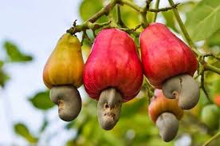

Mwongozo Kamili wa Kilimo Bora cha Korosho Kitaalamu

1. Idara ya Maandalizi ya Shamba na Udongo
Mkorosho ni mti wa kudumu unaoweza kuishi na kuzaa kwa zaidi ya miaka 30 hadi 50, hivyo maandalizi sahihi ya shamba yanajenga msingi wa tija ya muda mrefu.
- Hali ya Udongo: Korosho hustawi vizuri kwenye udongo wa kichanga tifutifu (*sandy loam soils*) wenye kina kirefu na unaopitisha maji kwa urahisi sana. Haustahimili kabisa udongo wa mfinyanzi mzito au maeneo yanayotuamisha maji, kwani husababisha mizizi kuoza.
- Kusafisha na Kuandaa Mashimo: Chimba mashimo ya upana wa cm 60, urefu wa cm 60 na kina cha cm 60. Udongo wa juu uliotolewa uchanganywe na ndoo moja ya samadi iliyoiva vizuri na gramu 200 za mbolea ya fosfari kabla ya kurudishwa ghorofani kwenye shimo [1.3].
2. Idara ya Upandaji na Vipimo vya Nafasi
Kutokana na taji la mkorosho kutanuka sana, nafasi kubwa inahitajika ili kuzuia miti isingane na kukosa mwanga wa jua unaochochea uuzaji wa maua.
| Mfumo wa Nafasi | Umbali Kati ya Mstari na Mstari | Umbali Kati ya Mti na Mti | Idadi ya Miti kwa Ekari (Wastani) |
|---|---|---|---|
| Mfumo wa Kawaida (Zamani) | 12 Mita (12 m) | 12 Mita (12 m) | Miti 27 hadi 28 |
| Mfumo wa Kisasa (Uliopendekezwa) | 9 Mita (9 m) | 9 Mita (9 m) | Miti 48 hadi 50 |

📋 Ripoti ya Mahitaji (Mfumo wa Kisasa)
💵 Makadirio ya Kifedha ya Korosho
3. Idara ya Mbegu na Usimamizi wa Upogoleaji (Pruning)
Uzalishaji bora wa korosho unategemea miche iliyofanyiwa ukarabati kitaalamu na upogoleaji sahihi wa matawi.
- Miche ya Vikonyo (Grafted Seedlings): Inashauriwa sana kutumia miche iliyofanyiwa ubadilishaji wa vikonyo (*grafted*) kutoka **TARI Naliendele**. Miche hii inawahi kuzaa (mwaka wa 3) na inatoa korosho kubwa zenye uzito mzuri wa kokwa (Outturn-Nut Count) [1.3].
- Upogoleaji (Pruning): Katika miaka miwili ya kwanza, kata matawi ya chini ili kuacha shina moja kuu linyooke hadi urefu wa mita 1-1.5 kabla ya kuruhusu matawi ya juu kutanuka. Ondoa matawi yaliyokauka, yenye magonjwa na machipukizi ya ndani yasiyopata jua ili kuchochea uuzaji wa maua mengi.
4. Idara ya Ulinzi: Kudhibiti Ugonjwa wa Ukungu na Wadudu
Upotezaji mkubwa wa mazao ya korosho nchini unatokana na magonjwa ya fangasi wakati wa msimu wa kutoa maua na vichipukizi vipya.
Ugonjwa wa Ukungu wa Unga (Powdery Mildew Disease - PMD)
Uharibifu: Huu ndio ugonjwa hatari zaidi wa korosho nchini. Fangasi wanashambulia maua, vichipukizi na korosho changa na kuziacha zikiwa zimefunikwa na unga mweupe, jambo linalofanya maua yakauke na kudondoka yote chini [1.3].
Udhibiti wa Kisayansi: Nyunyizia **Unga wa Salfa (Sulphur Dust)** au viuatilifu vya maji vya fangasi (*systemic fungicides*) mara 3 hadi 4 kwa msimu, kuanzia wakati miti inapoanza kutoa vichipukizi vipya na maua [1.3].
Wadudu Mbu wa Mikoroshoni (Helopeltis): Wadudu wanaofyonza utomvu kwenye majani machanga na korosho changa, na kusababisha madoa meusi na matunda kunyauka. Wanadhibitiwa kwa kupuliza dawa za wadudu zilizopendekezwa [1.3].
5. Idara ya Uvunaji na Kukausha Kitaalamu
Ubora wa kokwa ya ndani na daraja la korosho katika soko la kimataifa unategemea jinsi zilivyovunwa na kukaushwa vizuri.
- Mbinu ya Kuvuna: Vuna korosho zilizoanguka zenyewe chini baada ya kuiva kabisa. **Ni marufuku kuchuma korosho zikiwa juu ya mti**, kwani zinakuwa hazijakomaa kikamilifu na zitashusha uzito wa kokwa (*nut count*). Tenganisha kokwa (korosho) na bibu (tunda laini) mara moja kwa kuzizungusha kwa mkono.
- Kukausha: Kausha korosho ghafi mara moja juu ya maturubai au chanja safi juani kwa siku 2 hadi 3. Geuza mara kwa mara ili zikauke sawia. Zinafaa kuhifadhiwa zikitoa sauti kavu ya metali (*metallic sound*) ukizigonganisha na unyevu wake ukishuka chini ya **9%** [1.3].